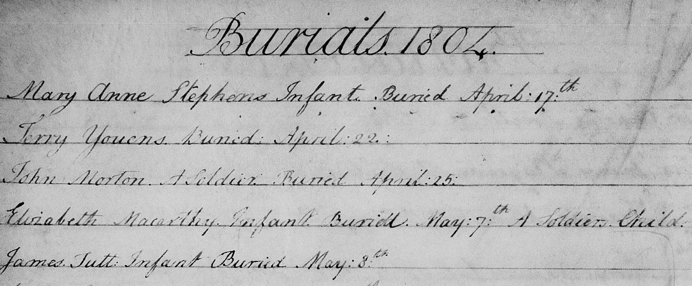
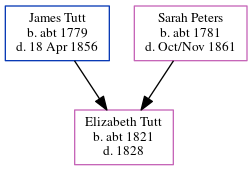

James Tutt c1804 - 1804
[ Home ] | [ Calendar ] | [ Surnames Index ] | [ Errors ] | [ Family History ]The child of James Tutt (a farm bailiff) and Sarah Peters (a nurse), James Tutt, the three times great-uncle of Nigel Horne, was born c. 18041 and baptised in Cheriton, Kent, England on 22 Apr 1804.
He died in 1804 and was buried at St Martin's Church in Cheriton on 8 May 18042,3,4.
Parents
- James was born c. 1779
- Sarah was born c. 1781
Citations
- Kent, Canterbury Archdeaconry Burials - Findmypast
- Kent, Canterbury Archdeaconry Burials - Findmypast
- England Deaths & Burials 1538-1991 - Findmypast
- England Deaths & Burials 1538-1991 - Findmypast
Media
James Tutt - Burial Record

Kent, Canterbury Archdeaconry burials - GBPRS/CANT/D/95286665
England Births & Baptisms 1538-1975 - R_882816985
England Deaths & Burials 1538-1991 - R_275170173
England Deaths & Burials 1538-1991 - R_275178917
Family Tree
Map
Generated by ged2site. Last updated on Jul 3, 2024
Known Issues
Death date (1804) has no citations
Date of birth is known, but not place
Date of death is known, but not place